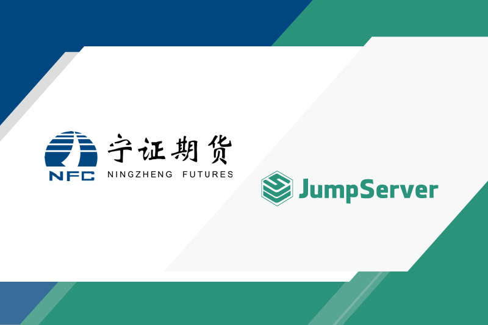

案例研究丨宁证期货通过JumpServer有效实现安全运维控制
JumpServer为宁证期货提供灵活有效的安全防护手段。
宁证期货有限责任公司（以下简称为“宁证期货”）是经中国证券监督管理委员会批准成立的专业期货公司。公司设有职能管理和业务部门，在深圳、武汉、成都、南昌、苏州、芜湖、青岛等地设有分支机构，在南京设有全资风险管理子公司。

期货机构安全运维的痛点
期货交易是标准化合约，其交易特点包括：保证金交易、当日无负债结算、可以做多也可以做空、T+0频率高、波动大、有夜盘。信息技术中心是宁证期货的IT部门，负责公司所有机房、IT系统、应用系统及总部桌面办公的运行维护工作。
结合期货交易的行业属性、交易特点及交易时间，宁证期货安全运维工作的痛点可以简单概括为以下几方面：
1. 运维压力大
期货交易时间分为白盘和夜盘两类。白盘是每周一至周五早晨8:55至下午3:15 , 夜盘是每周一至周五晚上8:55至次日凌晨2:30。每天都需要进行盘前系统启停、盘间监控、客户问题解答、盘后运维结算等工作。正常做完这些工作就需要到下午六点半，加上晚上七点半启动系统，值班人员早晨七点半到岗。
这样的交易时间特点导致IT系统连续工作的时间更长，即使是周末也属于盘间（系统带流水）工作，这样就导致IT维护窗口时间很短。而T+0的交易特点使得交易频率高，对系统稳定性要求高。因此，期货公司IT部门的压力巨大，人力资源极度紧张；
2. 监管要求严
国家对金融安全的要求在不断增强。期货公司受证监会管理，除了每年例行的网络安全检查、全面检查以外，还有针对突发网络安全事件的专项检查。一旦交易系统发生故障，不仅影响客户交易的连续性，还将影响公司评级。同时，期货公司作为期货交易所的会员，还受到期货交易所的管理与检查；
3. 疫情期间远程办公的需要
从2020年初的新冠疫情开始至今，多次遇到了因疫情影响导致公司人员无法正常到岗的情况。为保障期货市场开市的需要，公司通过“VPN+堡垒机”的方式实现了远程运维操作，对运维操作过程、双岗复核情况进行审计；
4. 运维效率需要提升
期货公司需要安全，更需要生存，需要把有限的资金用在刀刃上，同时有限的人力也无法全部投入在安全方面。因此，如何让堡垒机在整体的安全架构中发挥更大的价值，增强安全性的同时确保工作效率不降低，甚至提高效率，也成为宁证期货IT部门的新挑战；
5. 传统堡垒机价格过高
宁证期货原来有三个数据中心，因为传统堡垒机授权价格过高，每个机房仅购买了一台堡垒机（采用2U物理一体机形式）和少量授权，在实际使用过程中普遍存在多人共用同一个堡垒机账号的情况。这样一来，访问权限无法精确控制到人、到时间段，难以实现严格的运维安全审计。
同时，通过传统堡垒机来维护系统增加了管理员操作的复杂性，系统管理员的抵触也使得传统堡垒机使用率较低，逐步被边缘化，最终只能沦为应付检查的“花瓶”。
堡垒机的选型思路
针对以上的安全运维痛点，宁证期货对市场上的堡垒机进行了选型，最终选择了JumpServer堡垒机企业版。宁证期货重点考察的内容包括：
■ 满足监管要求
金融安全是国家安全的重要一环，必须严格落实行业监管要求，满足包括网络安全法、证券期货业网络安全管理办法、证券期货业信息系统审计指南、证券期货业网络安全等级保护工作指引、证券期货业网络安全等级保护基本要求等在内的规章制度。
JumpServer堡垒机是符合4A（包含认证Authentication 、授权Authorization、 账号Accounting和审计Auditing）规范的运维安全审计系统，并且获得了公安部颁发的《计算机信息系统安全专用产品销售许可证》，有强大功能和资质的加持。JumpServer能够为企业通过等级保护评估提供强有力的支持，助力企业快速构建身份鉴别、访问控制、安全审计等方面的能力，满足了安全监管的要求；
■ 安全访问控制
在没有堡垒机的时候，如果规范操作，一些短期的临时访问授权需要安全管理员调整网络安全设备的权限。这类调整可能涉及生产环境，因此需要等收盘后的窗口时间才能进行调整。而宁证期货的防火墙策略非常细致，需要更多的时间配置与测试，临时策略还要备注及时删除，以避免遗留漏洞。
JumpServer堡垒机能够提供灵活有效的安全控制，守好企业安全防护底线。宁证期货基于JumpServer从用户、部门、服务器、时间等多个维度严格控制访问授权，有效平衡了安全与有限人力之间的关系；
■ 有效隔离网络
堡垒机可以有效隔离生产网络，通过堡垒机进行运维操作只有鼠标、键盘和显示画面的交互，避免直接连接生产系统可能产生的数据泄露和病毒传播风险；
■ 水印录像
JumpServer的录像回放和水印功能，让操作人员产生敬畏之心，谨慎平时的运维操作，降低了误操作的发生次数。录像回放功能还可以用于操作故障回溯，水印功能可以有效防止操作人员随意截屏；
■ 浏览器操作
JumpServer支持主流浏览器，无需安装插件或者代理工具。无论是访问Linux机器、Windows机器、网络设备或是服务器，还是上传、下载文件，都可以在浏览器中直接进行操作，满足用户在家办公的需求，并且几乎对电脑没有性能压力；
■ 多人协作
JumpServer堡垒机可以方便多人协同操作，并且双岗复核记录可查，两个人的堡垒机账号各自都有录像记录。同时，JumpServer还能够确保使用体验的一致性，降低误操作概率，用户在家和在公司的操作体验完全一致；
■ 云原生
JumpServer堡垒机云原生的设计非常适合部署在虚拟化环境以及容器化环境中，部署升级操作便捷快速，也更加能适应未来的IT架构，完全不受硬件生命周期的影响。
JumpServer堡垒机的部署
2020年年初，宁证期货启动了JumpServer堡垒机企业版的部署工作，并上线测试环境和VPN系统，当时主要是为了满足IT部门与供应商的使用需求。随着近年来业务发展的需要，公司业务系统上线周期缩短，业务系统的数量快速增加，远程办公的需求变得越来越多。因此，宁证期货在后期将JumpServer陆续接入了仿真、测试环境，使得周末交易所测试可以全程在家通过“VPN+JumpServer”的方式远程实现，节省了测试同事往返公司的时间。
目前，宁证期货部署的JumpServer堡垒机拥有总用户数70个，日活跃用户15人左右，日登录次数 300次左右。通过JumpServer管理的环境包括生产环境、仿真环境和测试环境，Windows资产以VNC为主，网络设备和Linux资产使用SSH协议。2021年11月，宁证期货将JumpServer升级至v2.16.1版本，并稳定运行。
宁证期货采用单机模式部署JumpServer堡垒机，10个组件均采用容器化部署在同一台虚拟机上。
采用单机架构主要是考虑到在现阶段性够用的情况下，如果采用多机部署模式，MySQL、Redis、HAProxy这些JumpServer核心组件增加了系统资源开销和日常维护的复杂性。未来很长一段时间，宁证期货仍然会使用单机部署架构，如果性能遇到瓶颈，可以通过增加JumpServer虚拟机硬件资源来提升性能。
宁证期货的IT团队利用虚拟化平台本身的高可用技术保障JumpServer的可用性，同时虚拟机备份系统定时自动将JumpServer虚拟机备份至NAS，并且各网络区域边界防火墙放行JumpServer至各机房、各网络区域的访问。JumpServer按照部门建立账户，分配资产并进行授权，并将账户分为管理员、审计员、普通用户和访客，根据角色设置账号到期日期及有限的资产访问权限，有效进行安全访问控制。
JumpServer堡垒机的使用经验
作为JumpServer的长期用户，宁证期货总结了一些实际使用经验和心得，供具有相同使用的企业用户作为参考。
JumpServer的风险
■ 单点故障风险
由于堡垒机部署在同一个虚拟机上，过于集中，一旦发生故障，会对系统运行造成很大的影响，因此需要留好必要的应急手段。比如，通过定期对虚拟机进行快照，或者网络层支持临时开通直接访问服务器的应急PC等方式。高可用部署节点众多，如果不考虑性能不足的问题，需要评估是否有必要采用高可用部署架构；
■ 安全攻击风险
堡垒机权限过于集中会带来一定的安全攻击风险，容易成为优先攻击的目标。
JumpServer的安全防护
为了提高系统的安全性，企业可以采取以下安全防护措施：
■ 做好JumpServer主机安全防护，开启Linux主机防火墙；
■ 更换默认SSH端口，限制SSH登录IP，禁止ROOT用户登录；
■ JumpServer相关密码通过生成工具产生，推荐12位以上无规律强密码，开启全员MFA认证；
■ 通过HTTPS域名访问，配置公司SSL证书，同时JumpServer还可以支持国密算法；
■ 避免直接暴露JumpServer Web端口，建议通过具备双因子认证的VPN进行访问；
■ 强制用户密码设定的复杂度，并进行定期修改，禁止重复密码；
■ 做好监控与告警，尽早发现故障并提前介入，例如通过监控软件监控JumpServer各端口、磁盘空间等。
优化提示
■ 对Windows禁用RDP改用VNC远程，修改默认VNC端口，限制仅允许JumpServer通过IP连接。在实际使用中发现，通过堡垒机使用VNC时比直接连接VNC更加流畅；
■ 慎用文件上传功能，因为JumpServer目前还不支持存储和上传文件，也不能对文件进行查杀病毒，仅能将文件名称记录到日志；
■ 最大空闲时间调短，减少录像文件大小。堡垒机使用起来十分方便，不知不觉间可能会打开好几个资产连接窗口，这会产生较多的无用录像，占用较多的磁盘空间。
运维心得
■ 管理层对安全的重视与坚定支持非常重要，有利于公司安全运维体系的搭建；
■ 让用户改变使用习惯，是一件很不容易的事情。因此最好先从自己使用的系统开始，先从一小部分团队开始，逐步收紧，给大家一些适应与习惯的时间。近年来频发的网络安全事件，不断推动着宁证期货的IT运维团队做好安全防护工作，让更多的同事逐步接受使用堡垒机工作的习惯，使得堡垒机项目成功上线并稳定运行；
■ JumpServer的在线文档写得非常细致，没有硬件的束缚，容器化的一键部署，社区版本的永久免费承诺，还有来自广泛用户的需求促进JumpServer一直保持着快速迭代更新的节奏，这些都在不断地赢得用户的信任，也为用户赋予长期使用的信心。
“ JumpServer 从创立至今始终坚持开源开放，始终坚持倾听社区心声，始终坚持高质量快速迭代。我们将继续秉承这些原则，用心做好一款堡垒机。”
—— JumpServer 开源项目创始人 广宏伟
联系我们
想要进一步了解 JumpServer ? 欢迎通过如下方式联系我们


Zabbix + JumpServer：IT 运维的开源双子星
Zabbix 负责「看得见」，JumpServer 负责「管得住」。飞致云为您提供「监管控」整体方案。
Zabbix
全栈监控 · 看得见
JumpServer
安全审计 · 管得住